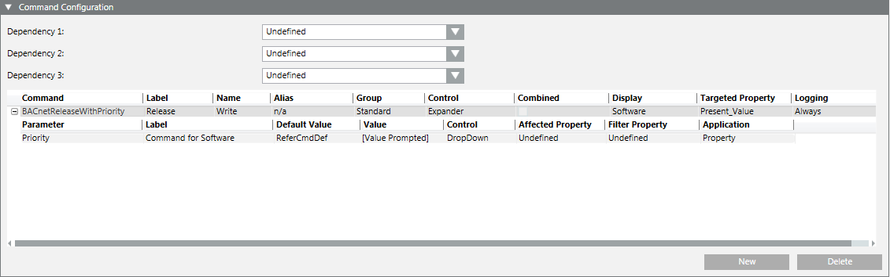

Unable to Write all the Values Through OPC DA Server
For each property, OPC allows one command only with Name = Write.
In special configurations, a workaround is required if for the same property two commands with Name = Write are expected to be exposed through the Desigo CC OPC DA server.
Therefore, in cases where a driver works exactly the same as the BACnet driver, try this workaround:
- In the customized object model, identify the property to which you can add a second command, and in the Command Configuration expander, locate the Name field and enter the following text exactly:
Write.
See also the following example from BACnet where a BACnet value is to be written and released:
- The object model GMS_BACNET_EO_BA_AO_1 (belonging to the library BA_Device_BACnet_HQ_1) was customized.
- The
Writetext was already entered for a command (in this example, Command) associated with the property Present_Value. - To be able to also execute another command, for the property Current_Priority the command BACnetReleaseWithPriority was defined, and in the Name field the text
Writewas entered.
